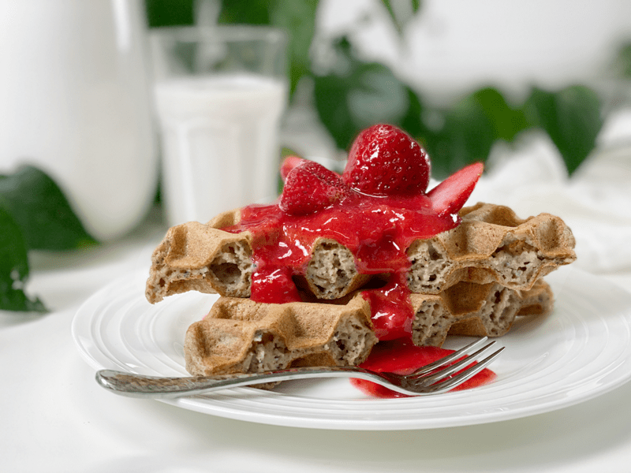
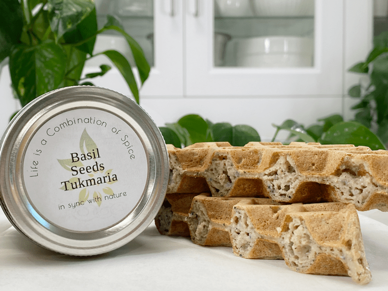
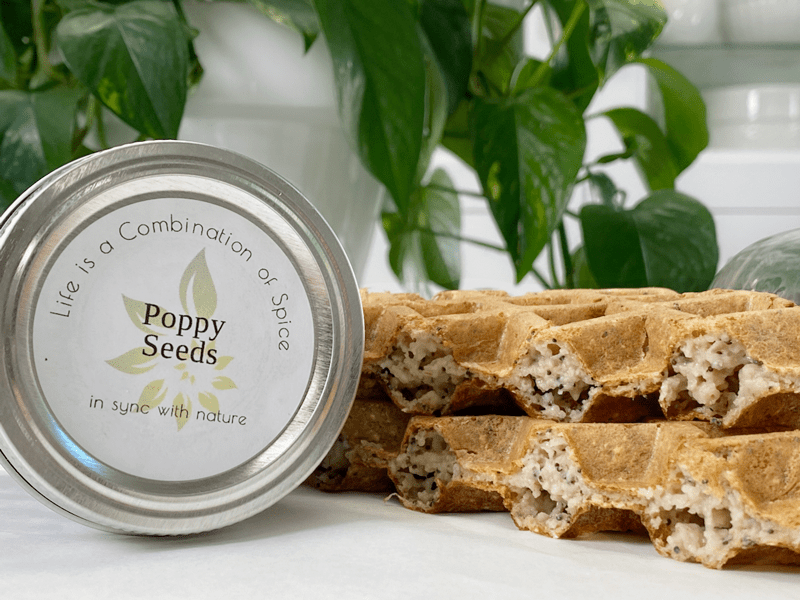
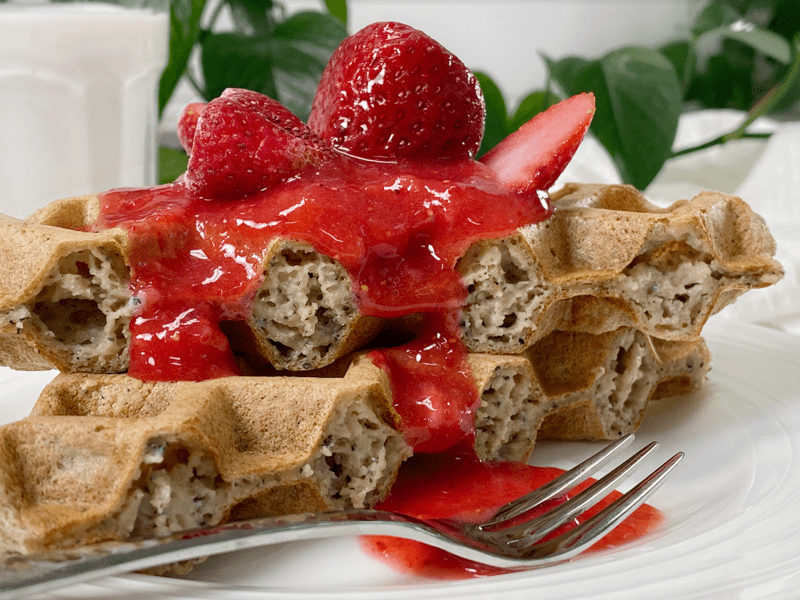
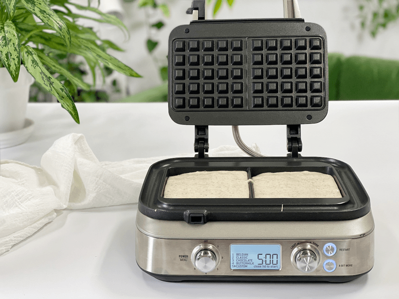
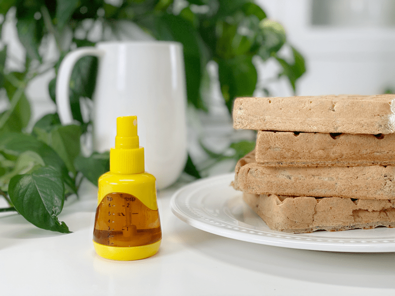
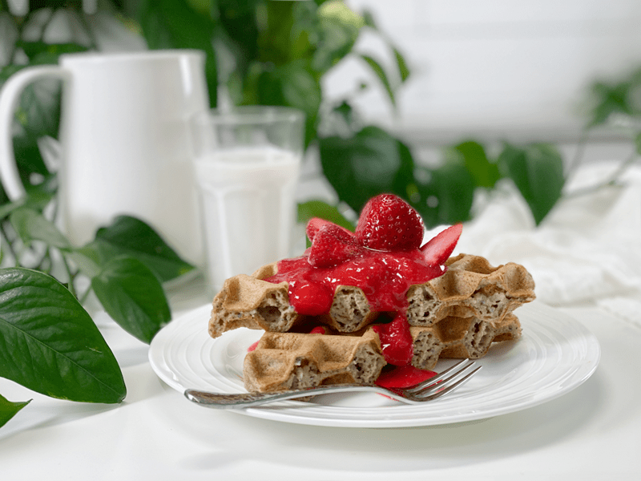

Lemon Poppy / Basil Seed Waffles | Flour-Free | Oil-Free
Lemon Poppy Seed Muffins–moist and bursting with bright citrus flavor, with a little added crunch from the poppy seeds. A delicious morning treat! The duo of lemon and poppy seeds is a classic combination. We see it mostly in cakes, muffins, scones, cheesecakes, pancakes, and bread. So, I thought, why not add a lemon poppy seed waffle that is flour-free, gluten-free, vegan, nut-free, and has no added sugars to my recipe collection? Without all those ingredients, how can it possibly taste good? Let me show you how.

It’s funny how you can use the same batter to make pancakes and waffles, yet they couldn’t be more different. Waffles are much lighter in texture than pancakes. Pancakes are brown on the outside, but they’re floppy, soft, and spongy, with an interior that looks a lot like cake. Waffles, on the other hand, are crisp on the outside and light on the inside, like a funnel cake.
These waffles are NOT meant to be sweet-tasting–most waffles aren’t. If you have a sweet tooth, it’s all in the toppings that we choose to complete the waffle experience. The only sweetener I decided to use was a ripe banana. The real star of the show is the lemon flavor–but it’s not too overpowering, just enough to make its presence known. Of course, you can always add more if you love the taste of lemon. You’re in the driver’s seat, and your hand is on the “lemon throttle.” (Yeah, that sounded funnier in my head.)
Ingredients |Technique | Tips
Lemon Essential Oil Versus Lemon Juice
- Lemon Essential Oil
- When using essential oils, make sure that they are food grade.
- When adding the essential oil drops, start with 5 drops, quickly blend and taste the batter–add more if needed. I don’t recommend holding the bottle over the blender carafe and letting the drops drip in… you can quickly lose control and add TOO much, which can ruin the batter. Instead, let the drops fall into a measuring spoon, then swirl that in the batter.
- Lemon Juice
- If you decide to use freshly squeezed lemon juice, add 1 Tbsp, and increase to the level you like. If possible, use Meyer lemons, which are sweeter and less acidic.
-

-
Take a peek at the textures of these two waffles.
-

-
One is using basil seeds and one poppy seeds.
Basil Seeds versus Poppyseeds
- Basil Seeds
- Basil Seeds are very similar to chia seeds, since they swell when added to a liquid. They create a translucent white film coating around each black seed and expand to twice their size. Never eat them dry. They need liquid to help release their antioxidants and beneficial digestive enzymes.
- There are a lot of health benefits to them, but the one that stuck out to me the fact that they are considered to be suitable for type 2 diabetics as they are known to keep a check on blood sugar levels. They slow down your metabolism, controlling the conversion of carbohydrates into glucose.
- If you decide to use basil seeds in the recipe, the waffle batter will thicken and create a more bread-like waffle (perfect, if you ask me).
- They don’t add any flavor to the waffle.
- Poppy Seeds
- They are known to have high levels of dietary fiber, B vitamins, and several essential minerals, such as calcium, phosphorus, iron, magnesium, and zinc. So don’t discount their health contribution when using them in recipes.
- Poppy seeds are crunchy and add a little nutty flavor.
- When I used the poppy seeds instead of the basil seeds, the batter was a bit thinner and created a lighter-textured waffle.
No-Oil Waffles
- I purposely created this recipe to be oil/fat-free, but that’s due to my own personal preference. It doesn’t really need oil, and my husband, who likes healthy fatty foods, found these delicious.
- However, the waffle iron may need a little oil. I didn’t experience any sticking, but if you do, lightly spray a thin coat of oil on the iron grills. If they still stick, you might have an old waffle iron that might require replacing.
Preheat the Waffle Iron
- It’s important to pour the batter onto a hot waffle iron. You should hear the batter sizzle on contact. The outer crust will immediately begin to set and crisp. Moisture in the batter quickly turns to steam and evaporates out the sides of the pan. If the iron isn’t hot, none of this happens, and the waffles will be soggy and squishy. When the steam stops, the waffle is close to being done.
Extra Crispiness
- Place the cooked waffles on a wire rack so air can circulate, preventing sogginess.
- You need to keep in mind that we are not using traditional ingredients such as eggs, baking soda, baking powder, and milk. All of these ingredients perform a chemistry act that gives waffles that light, airy, and crispy texture. We are challenging the limits of waffle-making with unique ingredients.
Removing the Waffles
- If you make full-sized waffles (edge to edge)… be very CAREFUL if you use a metal utensil when removing the waffles. Don’t let it scrape against the waffle iron. It can ruin the non-stick surface. I use a high-temp-safe spatula to release the edges, then lift it off. Even a wooden skewer stick can help get the edges up.
- If you still find removing them challenging, just add batter to the center of the waffle iron (don’t fill the whole cavity). This will create a circular waffle, and it is much easier to remove.

Make Every Bite Count
Making every bite count is the reason you are here, right? We want to enjoy the combination of nutrient-dense whole foods that leave our bellies satiated and our taste buds singing, “The Hills are Alive.” I don’t know why that song pops into my head whenever my taste buds are tripping over one another in excitement–but it does.
- When making this recipe, clear your mind of all negativity, fears, and anxiety that may surround you. Take a few deep breaths, clear your mind, and shower each ingredient with gratitude. It’s so easy to take our food for granted; let’s not do that anymore. Every time we create a plate of food and set it down before us or those we love…we are truly blessed.
I hope you enjoy this recipe because…
 Ingredients
Ingredients
Yields 5-6 (4×4″) waffles
- 2 1/2 cups water
- 3 cups gluten-free rolled oats
- 1 ripe banana
- 1 tsp vanilla extract
- 1/2 tsp sea salt
- 5-10 drops lemon vitality essential oil or 3 Tbsp Meyer lemon zest
- 1 1/2 Tbsp basil or poppy seeds
Preparation
- Turn the waffle iron on and allow it to reach cooking temperature while you create the batter.
- Place the water, oats, banana, vanilla, salt, and lemon oil or juice into the blender. Blend until creamy. Add the poppy seeds or basil seeds in and pulse the blender a few times to “stir” them in.
- Let the batter sit for 10 minutes.
- Pour the batter into the center of the waffle iron. Since machines run in different sizes, add enough so the batter can slightly reach out to the sides.
- I didn’t need to use any oil to prevent sticking with my waffle machine. If you feel unsure about the machine you are using, you can either do a small test run, or you can lightly coat all cooking surfaces of the waffle iron to help avoid sticking.
- You might need to add a bit more water to keep the batter at a pancake batter consistency, as it starts to thicken the longer it sits.
- With my waffle machine set on “custom,” I cooked mine for 7 minutes (until the steam coming out reduced).
-
Open the waffle iron lid and leave it open about for 20 seconds (this will help avoid sticking) before gently removing the waffle with a butter knife or fork**.
- Take a look when you open the waffle iron. If the waffle is splitting in two, it hasn’t cooked long enough. Close the lid and wait another minute.
- **If you use a metal utensil when removing the waffles, don’t let it scrape on the waffle iron. It can ruin the no-stick surface. I use a high-temp-safe spatula to release the edges, then lift it off.
-
Repeat until the batter is used up.
Storage
- IF you have any leftovers, they can be stored in an airtight container in the fridge for your next meal. I would enjoy them within 3 days. Pop them in the toaster to warm and crisp back up.
- These waffles can be made in advance and frozen for future meals. Flash freeze by laying them in single layers on a baking sheet and putting them into the freezer. Once frozen, place them in an airtight freezer-safe container for up to 3 months. To reheat and crisp up, take them straight from the freezer to the toaster.
-

-
Cook for 5-7 minutes or until fully cooked through.
-

-
Watching your sugar but want a little maple syrup? Here’s my trick… mix 1:1 ratio of maple syrup and water. Place in a spray bottle and spritz the waffles just to give you that hint of sweetness.
-

-
Top with thawed strawberries and enjoy!
© AmieSue.com